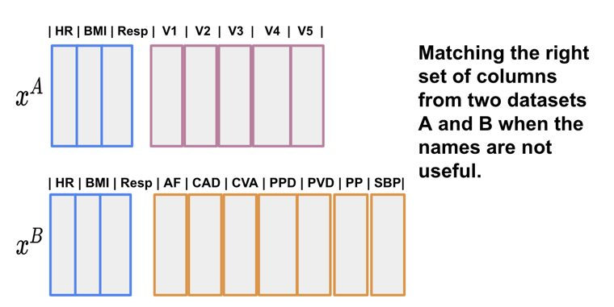
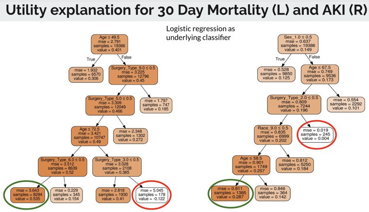
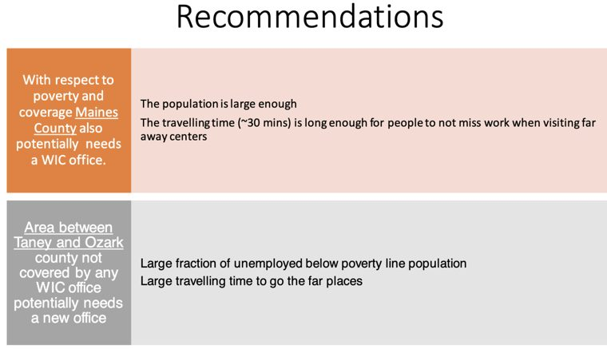

Staff Scientist · Dept. of Anesthesiology, WashU Medicine — St. Louis, MO
Sandhya
Tripathi
Machine learning for sepsis, precision medicine & critical care.
I build, validate, and deploy phenotyping models into hospital EHR systems to identify clinically meaningful sepsis host-response subgroups. Earlier work spans AI decision-support for perioperative care, algorithmic fairness, and learning under label noise — from model design through deployment.
Staff Scientist CURRENT
Dept. of Anesthesiology, Washington University School of Medicine
Precision medicine & biostatistics for sepsis phenotyping.
- Developed and validated a parsimonious, biomarker-based model for classifying sepsis inflammatory phenotypes, and built a workflow to phenotype critically ill patients across retrospective (incl. MIMIC-IV) and prospective data.
- Deploying phenotype-classification models into Epic EHR — led the rollout across the Barnes-Jewish Hospital system and am now coordinating deployments at the University of Michigan and University of Colorado.
- Shared the phenotyping workflow with collaborators across the US, UK, Italy & Japan; analyzed the relationship between baseline phenotype and ICU mortality.
Postdoctoral Research Scholar
Dept. of Anesthesiology, Washington University School of Medicine
Clinical ML: development, deployment & evaluation.
- Deep-learning methods to match & harmonize patient records across hospital systems; risk-prediction models for post-surgical complications using LSTM and attention networks.
- Applied contrastive learning for representation learning on clinical tabular data, and taught it as a tutorial at IEEE BigData and ACM CODS-COMAD.
- Audited a telemedicine-RCT model for racial, sex & age bias, and built ML-interpretability explanations for clinicians.
- Quantified zip-code social vulnerability with GIS tools and studied its effect on surgical outcomes.
Research Scholar (MSc–PhD, Operations Research)
IEOR, Indian Institute of Technology Bombay
Learning under label noise; interpretable classification.
- Noise-robust cost-sensitive classifiers (modified squared & exponential loss); GAN-based methods for high class-conditional label noise.
- Shapley-value framework for interpretable feature selection.
Multi-View Representation Learning for Tabular Data Integration Using Inter-Feature Relationships
S. Tripathi, B.A. Fritz, M. Abdelhack, M.S. Avidan, Y. Chen, C.R. King · Journal of Biomedical InformaticsSocial Vulnerability and Surgery Outcomes: A Cross-Sectional Analysis
M. Abdelhack, S. Tripathi, Y. Chen, M.S. Avidan, C.R. King · BMC Public Health · co-first authorContrastive Learning: Big Data Foundations and Applications
S. Tripathi, C.R. King · ACM CODS-COMAD (IKDD)Interpretable Feature Subset Selection: A Shapley Value Based Approach
S. Tripathi, N. Hemachandra, P. Trivedi · IEEE International Conference on Big DataCost-Sensitive Learning in the Presence of Symmetric Label Noise
S. Tripathi, N. Hemachandra · PAKDD (Springer LNCS)Scalable Linear Classifiers Based on Exponential Loss Function
S. Tripathi, N. Hemachandra · ACM CODS-COMADHypoinflammatory Phenotype in Critically Ill Patients Lacks Biological Subsets by Targeted Proteomics & Transcriptomics
S. Tripathi et al. · Am. J. Respir. Crit. Care Med. (oral, ATS)Development & Validation of an Improved Parsimonious Model for Hyperinflammatory Phenotype Classification
S. Tripathi et al. · AJRCCM (poster, ATS)Prognostic Value of the Hyperinflammatory Phenotype Declines Over the Course of Critical Illness
S. Tripathi, B. Bartek, R.B.E. van Amstel, L.D.J. Bos … C.S. Calfee, P. Sinha · AJRCCM 211:A3136Algorithmic Bias in Machine-Learning-Based Delirium Prediction
S. Tripathi et al. · ML4H Symposium (extended abstract)
CLINICAL ML
Matching Electronic Health Records Across Sources
Statistical & deep-learning methods to solve the record-matching problem in EHR.

FAIRNESS
Fairness Evaluation for Clinical Prediction Models
Evaluates clinical models for fairness and delivers an applicability-based solution via model cards.

GIS · PUBLIC HEALTH
Where & What of WIC in Missouri
Geographic Information Systems analysis of WIC (Women, Infants & Children) office locations across Missouri.
Contrastive Learning: Big Data Foundations & Applications
IEEE BigData 2023, Sorrento · ACM CODS-COMAD 2024, Bengaluru20252nd place — I2DB Datathon: Causal Risk Prediction in Medicine
2021Top Reviewer Award, ML4H (top 10 of hundreds of reviewers)
2020Excellence in Doctoral Dissertation Award, IIT Bombay
Program committee: IJCAI, ML4H, AMIA, IEEE BigData (XAI Track), MLHC, TS4H @ ICLR.
Reviewer: npj Digital Medicine, Journal of Biomedical Informatics, Neural Networks, Knowledge-Based Systems, and more.
Languages
I enjoy picking up new languages.
Reading & Running
I read for fun and always welcome a book recommendation — here's my Goodreads →. Off the page, I'm a runner and hiker — tell me your favourite runs, trails, and hikes; I'm always after the next one.
Volunteering & Community
- Letters to a Pre-ScientistYear-long STEM pen-pal mentorship for middle & high-school students. prescientist.org →
- Gateway Pet Guardians, East St. LouisAnimal care, community events & fundraising. Go say hi to the adoptable dogs & cats — you might just fall in love. gatewaypets.org →
Emailsandhyat@wustl.edu
DepartmentAnesthesiology, WashU School of Medicine
Address660 S Euclid Ave, St. Louis, MO 63110